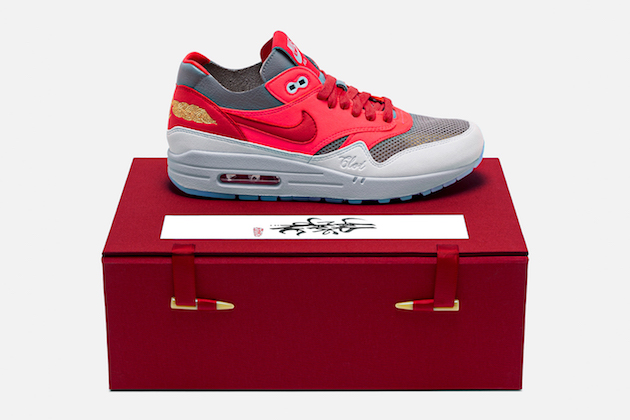
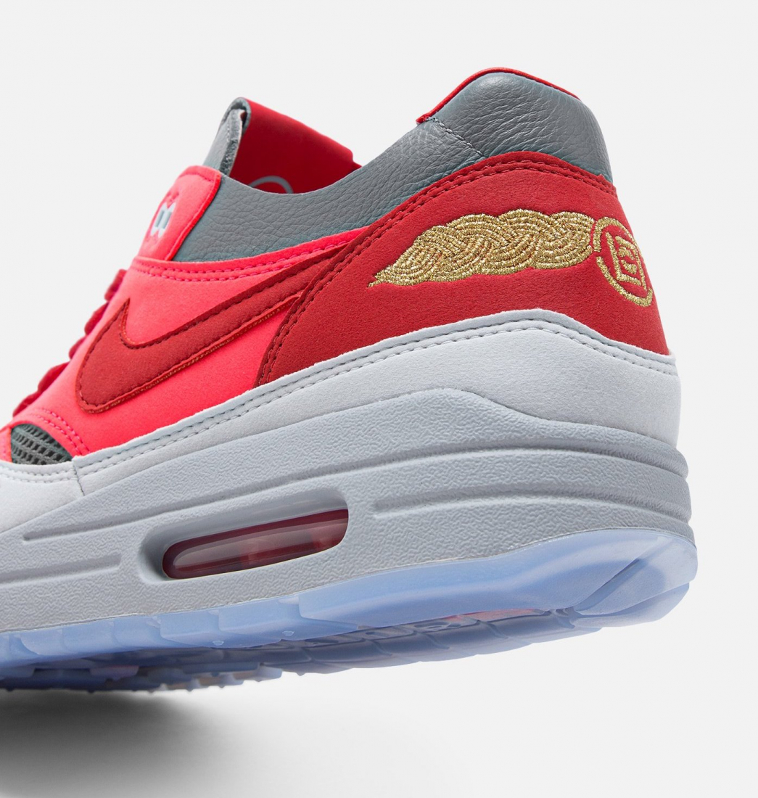
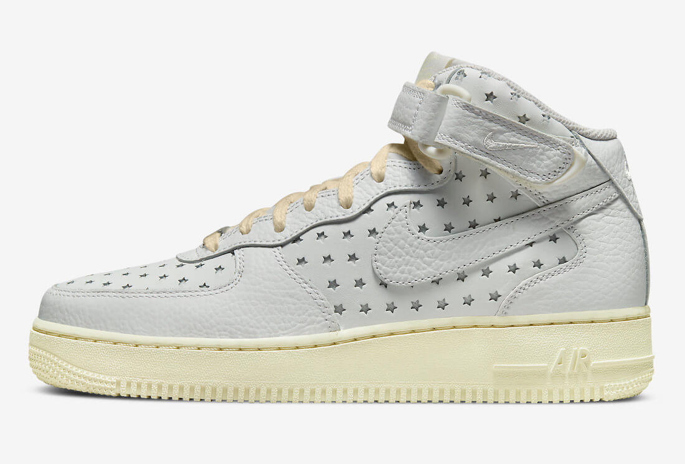
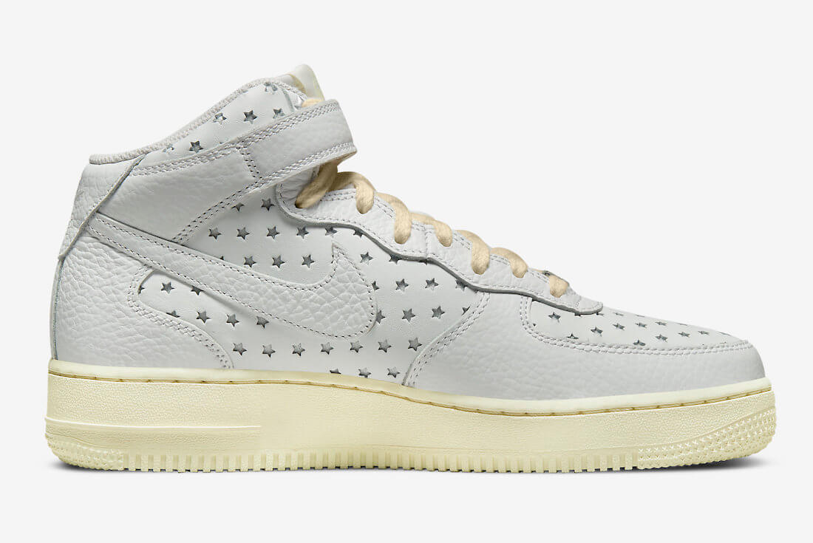

Nike y CLOT PRESENTAN LAS NUEVAS AIR MAX 1 "SOLAR RED"


Nike es la reina de las colaboraciones. No hay temporada en la que no nos brinden grandes colecciones en las que también están presentes otras marcas de su sector,
o incluso de otros, por eso ahora podemos anunciar que Clot lanzará pronto las nuevas Air Max 1 “Solar Red”.
Como el K.O.D., el bordado del talón o el Clod que se puede leer en el lateral, por lo que queda más que claro que han cuidado cada milímetro de estas Air Max 1 “Solar Red” . Todo ello las ha convertido en unas sneakers muy codiciadas, por lo que tendrás que ser rápido si en unos días quieres tu par.
Aunque en las fotos que han difundido no se sabe exactamente qué tonalidades tendrán, dado que han querido acompañar las “Solar Red” de una luz muy intensa, que nos deja ver solo algún detalle.
Aunque hayan difundido varias fotos no se sabe exactamente la fecha de lanzamiento.
CON LAS NIKE AIR FORCE 1 MID LLENAS DE ESTRELLAS, CAMINAS POR EL CIELO


No hay armario de sneakerlover sin unas Air Force 1 y este 2022, en el 40 cumpleaños de una de las siluetas imprescindibles de Nike, es momento de agrandar tu colección. Si todavía no tienes unas Air Force 1 Mid, esta versión repleta de estrellas te va a iluminar el camino.
Su estética es bastante particular, repleta de mini estrellas recortadas, lo que en USA ha hecho pensar en una celebración muy sneakerlover del 4 de julio, pero eso está por ver. En todo caso, y huyendo del patriotismo del rojo y el azul, Nike le ha dado un aspecto impecable y envejecido a estas Air Force 1 Mid gracias al cuero rugoso en las superposiciones y los toques amarillentos en la suela y los cordones.
El lanzamiento es una incógnita, ¿Será para el 4 de julio? Veremos, en todo caso actualizaremos la información en cuanto aparezca.